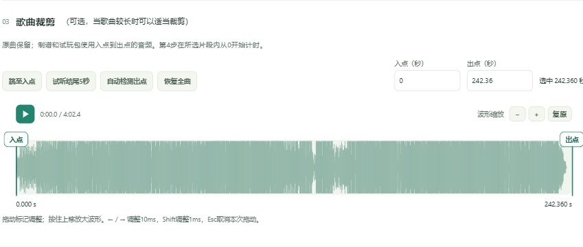
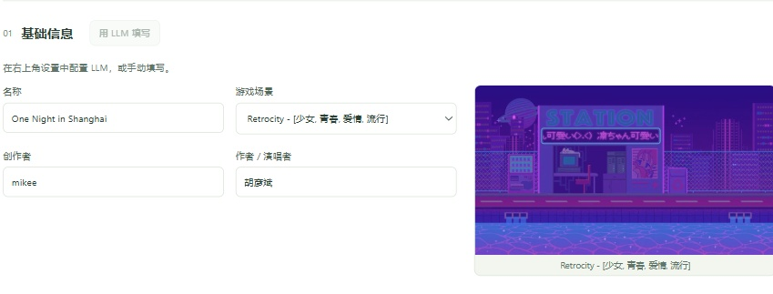
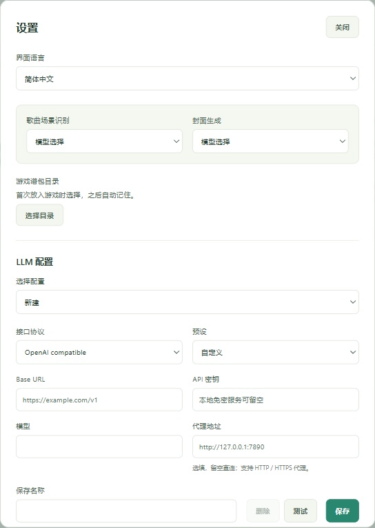
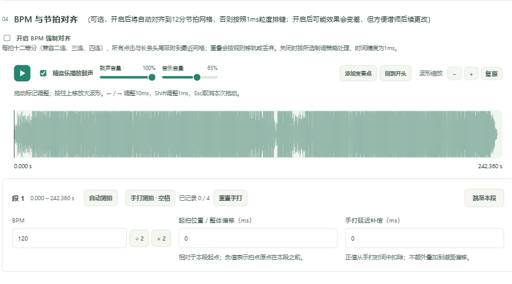

把喜欢的歌，
变成能玩的谱。
先下载好音源，再交给 MDAC。
网易云 NCM、常见音频，甚至下载的视频，都能成为一张谱面的起点。
NCM 本地解码 · 视频自动提取音轨
MP3 / FLAC / WAV / M4A / MP4 / MKV / WebM…
点击画面，看看这张谱如何诞生

前奏太长？
就在这里剪。
看着波形选起点和终点，随时试听。
自动检测出点、试听结尾，再把喜欢的片段交给制谱流程。
裁剪、制谱、打包在一个工作台完成。
原曲保留，试玩包使用你选中的片段。

填好信息，
选一个舞台。
写下歌名、作者和你的制谱人名字。
从 12 个游戏场景中挑选，也可以让 LLM 帮忙填写信息、推荐场景。
内置场景预览，选择前就能看到画面。
手动填写也能走完全部制谱流程。

接上你的 API，
按需调用。
支持 OpenAI 兼容聊天接口，
以及 OpenAI Images 兼容生图接口。填写地址、密钥与模型，就能分别配置歌曲信息和封面服务。
只有点击 LLM 按钮才调用服务。
自动采音、排键与导出在本地完成。
自己裁一张，
或让 AI 画一张。
上传喜欢的图片，自由调整圆形裁剪。
也可以写下想法，让生图服务结合歌名与作者生成封面。
内嵌图、文字封面、历次生成图随时切换。
保留原图，想换构图就重新裁剪。

不用先测 BPM，
也能开始制谱。
准备交给谱师继续打磨？
自动测拍、手打或手动填写 BPM，再开启每拍十二等分对齐，为后续编辑整理好时间网格。
边听音乐边听鼓点，调整 BPM 与偏移。
对齐更方便修改，但不保证手感更好。
选好策略，
生成你的谱。
默认综合 V4，也可尝试人声优先 R2 或综合 V5。V5 还能用间距滑块调节疏密，让难度更合你的习惯。
生成后查看参考定级，自行修改并确认。
这是本地估算，最终手感留给游戏里验收。
一键放入游戏，
开始你的试玩。
首次选择自己的 Custom_Albums 目录，之后一键放入。也可以下载 .mdm 试玩包，留给自己或继续编辑。
每次导出保留历史，同名不同版本不覆盖。
需已配置支持自定义谱面的游戏环境。
下载，解压，
双击 start.bat。
Windows CPU 便携版，工具与权重已打包。
打开本地工作台，就可以开始。
v0.5.0 · 中文 / English / 日本語
夸克网盘 · 提取码 jJvP